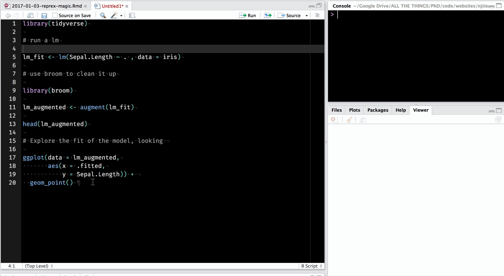
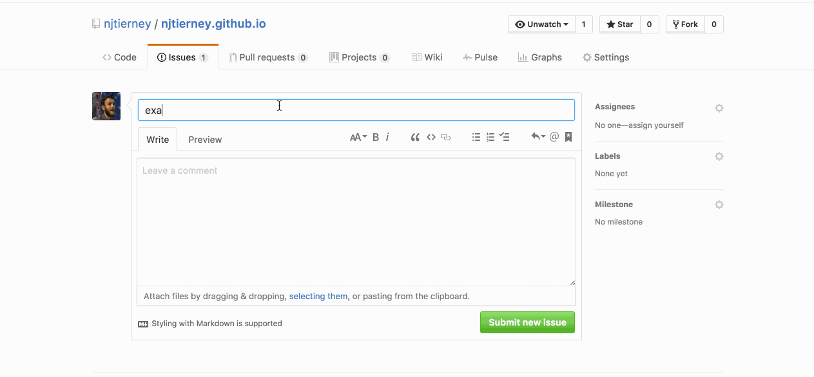
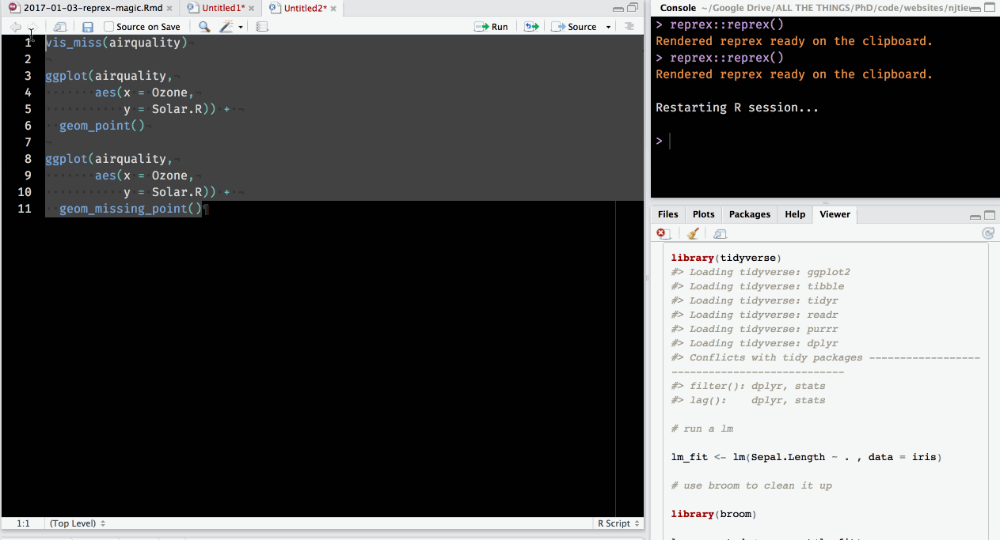
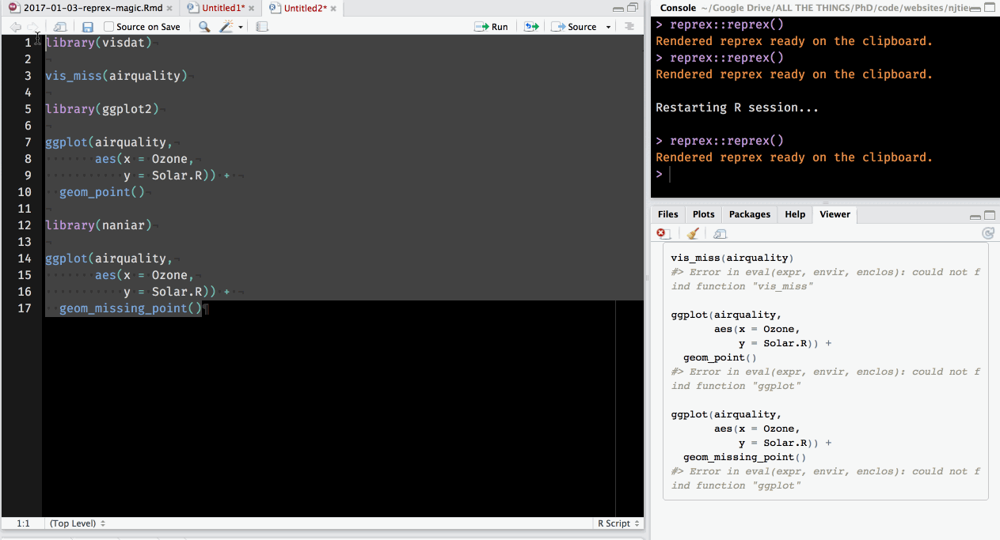
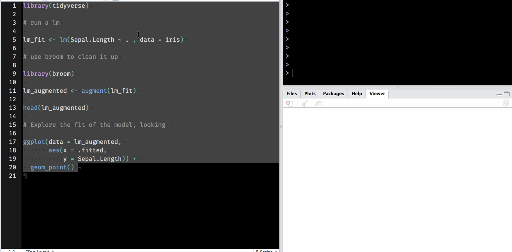
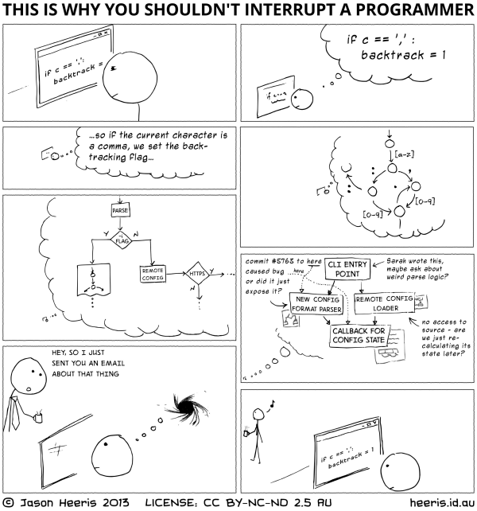

library(knitr)1 Making (Rep)roducible (Ex)xamples with reprex
(This is a reproduction of my blog post, “magic reprex”)
Making reproducible examples can be hard.
There’s a lot of things you need to consider. Like, making sure your environment is clean, the right packages are loaded, the code is formatted nicely, and images are the right resolution and dimension.
Getting all of these ducks lined up can sometimes take a couple of minutes, if you have a nice tightly defined problem. Other times, it can take much, much longer. Say for example, if you had a variable loaded in your environment that you forgot how to create, and you didn’t realise it was so important and OH GOD HOW DID I EVEN DO THIS? Ahem.
So, after some sensible swearing and frustration, you might ask yourself something like:
Surely there’s an easy, reproducible way to … make reproducible examples?
Enter the R package reprex [CRAN] [GitHub], by Jenny Bryan.
In the fashion of the times right now, I’ll illustrate reprex with a gif, which shows the following things:
- Take your code, copy it to the clipboard.
- Run
reprex, wait a moment for the code to execute. reprexcreates a html preview of your code.- A markdown chunk is also copied to the clipboard.
include_graphics("assets/reprex-copy.gif")
This means you can copy this to say, GitHub (reprex(venue = "gh")) (the default) to help you file an issue:
include_graphics("assets/reprex-github.gif")
There is also an option for Stack Overflow(reprex(venue = "so").
How does this work? reprex takes the section of copied code and then runs rmarkdown::render on it, which starts a fresh environment, and runs the code. This means that reprex will fail hard and fail early if your examples aren’t reproducible. If you don’t have the correct library loaded, it will show the error messages.
include_graphics("assets/reprex-fail-1.gif")
But then when you fix that, by adding library calls to visdat, ggplot2 and naniar, and you get what you want:
include_graphics("assets/reprex-success-1.gif")
So you know that when you run reprex, and it gives you a reproducible example, it will work!
Also worth mentioning is that rather magically, reprex also handles images. I didn’t even notice this at first. It was just one of those things where “it just works”. reprex handles this by uploading them to imgur using the knitr::imgur_upload function, which creates markdown links to the images.
so
library(tidyverse)
# run a lm
lm_fit <- lm(Sepal.Length ~ . , data = iris)
# use broom to clean it up
library(broom)
lm_augmented <- augment(lm_fit)
head(lm_augmented)
# Explore the fit of the model
ggplot(data = lm_augmented,
aes(x = .fitted,
y = Sepal.Length)) +
geom_point() gets turned into
library(tidyverse)
#> Loading tidyverse: ggplot2
#> Loading tidyverse: tibble
#> Loading tidyverse: tidyr
#> Loading tidyverse: readr
#> Loading tidyverse: purrr
#> Loading tidyverse: dplyr
#> Conflicts with tidy packages ----------------------------------------------
#> filter(): dplyr, stats
#> lag(): dplyr, stats
# run a lm
lm_fit <- lm(Sepal.Length ~ . , data = iris)
# use broom to clean it up
library(broom)
lm_augmented <- augment(lm_fit)
head(lm_augmented)
#> Sepal.Length Sepal.Width Petal.Length Petal.Width Species .fitted
#> 1 5.1 3.5 1.4 0.2 setosa 5.004788
#> 2 4.9 3.0 1.4 0.2 setosa 4.756844
#> 3 4.7 3.2 1.3 0.2 setosa 4.773097
#> 4 4.6 3.1 1.5 0.2 setosa 4.889357
#> 5 5.0 3.6 1.4 0.2 setosa 5.054377
#> 6 5.4 3.9 1.7 0.4 setosa 5.388886
#> .se.fit .resid .hat .sigma .cooksd .std.resid
#> 1 0.04479188 0.09521198 0.02131150 0.3077918 3.570856e-04 0.31367294
#> 2 0.05514933 0.14315645 0.03230694 0.3076565 1.251718e-03 0.47429637
#> 3 0.04690495 -0.07309695 0.02336968 0.3078349 2.317688e-04 -0.24106926
#> 4 0.05135928 -0.28935683 0.02801904 0.3069173 4.396118e-03 -0.95656076
#> 5 0.04736842 -0.05437691 0.02383379 0.3078627 1.309299e-04 -0.17937436
#> 6 0.05592364 0.01111427 0.03322050 0.3078956 7.772793e-06 0.03684044
# Explore the fit of the model, looking
ggplot(data = lm_augmented,
aes(x = .fitted,
y = Sepal.Length)) +
geom_point()
``You can even show the results of the session_info, for maximum reproducibility, by adding the argument: reprex::reprex(si = TRUE), which adds a super nifty drop down box for the session info.
include_graphics("assets/reprex-si.gif")
I really like these sorts of small tools in R. Squinting at a distance you might make the mistake of thinking:
so what, it does this one little thing
But then when you’re actually up close, you realise this means that you don’t have to bend your brain around doing this thing, which can range from mildly annoying to mostly infuriating.
You save time and energy, and can focus more on doing what you want to do, and less on fighting against interruptions. This comic by Jason Heeris illustrates this point nicely, I think:
include_graphics("assets/ProgrammerInterrupted.png")
Once again thank you to Jenny Bryan for making our lives easier. Jenny will be joining the RStudio team this year and I am really looking forward to seeing what she gets up to.
Read more about reprex on github here.